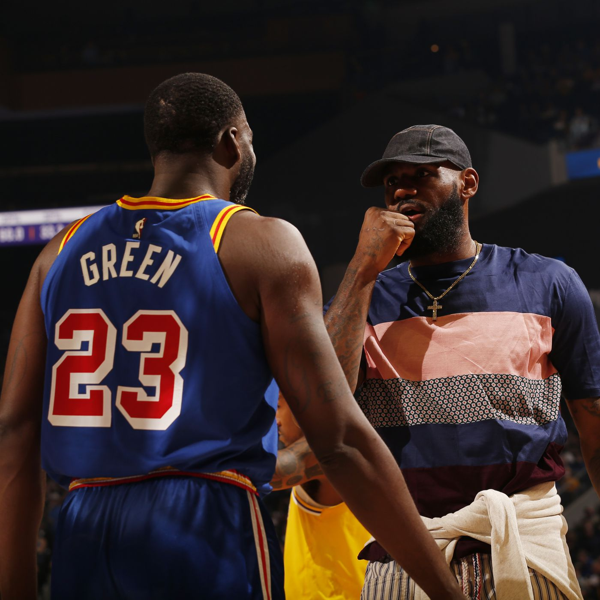
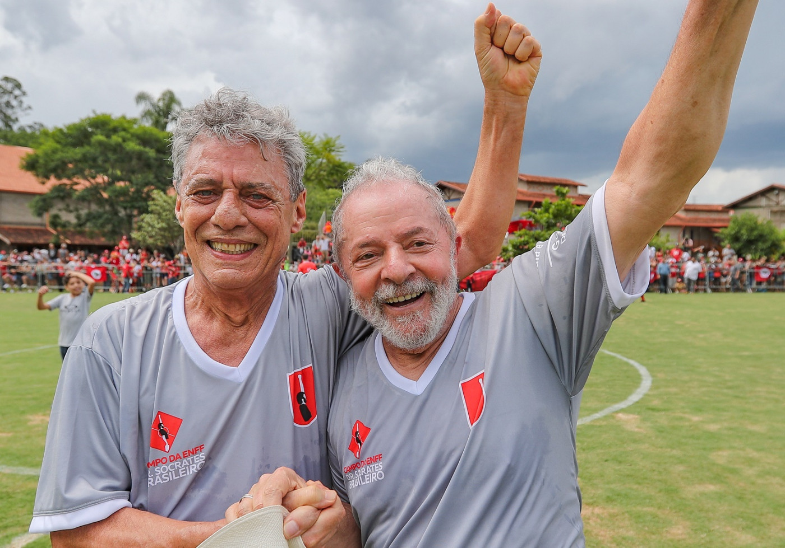

Torcida do Ceará prepara festa para ida da final da Copa do Nordeste
O Ceará inicia nesta quarta-feira, 19, o caminho em busca do tricampeonato regional. Com público de mais de 50 mil pessoas confirmadas antecipadamente, a torcida alvinegra prepara uma grande festa para o duelo de ida da final da Copa do Nordeste contra o Sport, na Arena Castelão.
Jogos hoje (19/04/23) ao vivo de futebol: onde assistir e horário
Confira onde assistir ao vivo aos jogos de futebol e qual horário jogam hoje, quarta, 19 de abril de 2023 (19/04/23). Partidas de torneios europeus, Sul-Americana e Libertadores compõem a programação do dia.
NBA anuncia suspensão de Draymond Green por um jogo
Draymond Green recebeu uma suspensão de um jogo da NBA por causa do ato antidesportivo protagonizado em quadra nessa segunda-feira. O astro do Golden State Warriors deu um pisão no peito de Domantas Sabonis durante a segunda partida da série contra o Sacramento Kings. Como resultado, ele está fora do terceiro confronto entre os dois times.
Entrega do prêmio Camões a Chico Buarque corrige 'um dos maiores absurdos' contra a cultura brasileira, diz Lula
Compositor brasileiro foi escolhido em 2019, mas ex-presidente Bolsonaro se recusou a assinar documentos. Camões é o maior prêmio da literatura em língua portuguesa; entrega foi em Portugal.